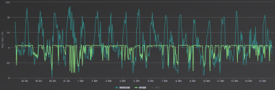
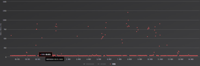
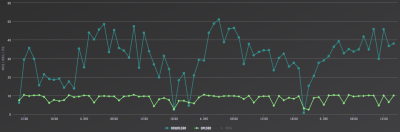
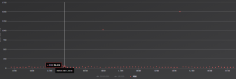

Tja, so sieht die Realtität anscheinend aus... bestes Netz in Ö my *ss..
Seit 2 Jahren ärgere ich mich mit T-Mobile herum: 4G mit ~5/5mbit (up/down)
Bei 3G krieg ich zumindest 10mbit down (da hatte ich mal unerwartet eine gute Technikerin am Apparat!)
Ja, deshalb hab ich auch einen LTE-Tarif, nicht wahr?
Vor allem die super Antworten von Service-/Technik-Supportler... wahnsinn. Wenn ich auf
https://www.t-mobile.at/netz/
gehe und LTE+ versorgt bin und dann werd ich abgewimmelt mit: "ich hab eine genauere Karte und bei Ihnen gibts kein LTE" dann wundere ich mich schon etwas... wozu dann überhaupt so eine falsche Karte ins Netz stellen? Das ist doch dreiste Fehlinformation!
An alle die auch Probleme mit Ihrem (Provider) TMobile haben: testet alle Provider durch! Anscheinend muss man das regelmäßig machen...
Ich hab jetzt Drei und 25-50mbit (8mbit up). SO schauts aus.
Bin gespannt wie lange das funktionieren wird... *würg*
Christian_E
Oje das klingt mal nicht so gut.
Aber verständlich, wenn man sich die Erfahrungen anhört.
Wäre da nicht eine Hybrid Lösung auch eine Lösung?
LTE wird wohl auch mittelfristig recht dynamisch bleiben - leider mit der Dynamik nach oben aber aus der Erfahrung leider auch viel zu oft nach unten.
Hybrid federt da vor allem außerhalb der Ballungszentren einiges ab, sofern über Kupfer oder über die vorhandene Verbindung halbwegs was drüber geht.
Trotzdem Danke für das Feedback.
LG
Christian
dlder
Stimmt; Hybrid wird teilweise auch angeboten. Leider sind wir auch ADSL "unterversorgt" mit ca. 1,5 - 2mbit. Bringt also leider auch nichts... (evtl. Ping könnte besser sein, habe das beim Nachbarn noch zu wenig getestet)
Zur "Visualisierung" hier Tests via Ookla.
T-Mobile
(28.10. - 14.11.18)


Drei
(02.12. - 05.12. -> kurzer Probe-Zeitraum)


Christian_E
Danke!
Ja wenn ein anderer Provider deutlich bessere Performance liefert, dann verstehe ich diese Veränderung.
Ich gehe mal davon aus, dass in deiner Gegend weniger "3" Kunden sind und damit die Zellen mehr Performance bieten.
Letztendlich muss man das immer beobachten.
Ich wünsch mir da auch in der Zukunft mehr Power und mehr Reserven im mobilen Bereich.
Mal schauen, ob so ein Wunsch mal in Erfüllung gehen wird.
Alles Gute!
LG
Christian
dlder
Das könnte sein...
Bzgl. mehr Performance und Reserven: ich glaube halt nicht, dass G5 (sollte das bei uns im ländlichen Raum überhaupt verfügbar werden) etwas bringen wird. Es bräuchte nämlich mehr Masten und bessere Abdeckung.
Ich bekomme (laut Technik-Auskunft beider(!) Provider) zb. keine direkte LTE-Funkwellen rein. T-Mobile Masten sind zu weit weg und die von Drei senden in die andere Richtung oder sind auch zu weit weg.
=> in unserem Gebiet geht's nur via Reflexion(?) und das schwankt dann halt noch mehr.
Deshalb bin auch ich der Meinung: Zukunft kann nur Glasfaser sein, bzw. beide Technologien.
Das einzig richtig Negative dass ich dabei sehe: wenn fälschlicherweise "bekannt ist", dass es bei uns eh LTE+ mit 250mbit gibt (laut Drei und T-Mobile), wieso soll dann die Breitbandmilliarde bei uns verwendet werden? -> genau, nämlich nicht.
Und deshalb gehören diese Falschaussagen der Provider verboten!! A1 ist da komischerweise besser: auf deren Karte sieht man gleich dass es nur 3G gibt.
Klar, deshalb geht man auch nicht zur A1, bietet die Konkurrenz doch LTE...
Ich finds halt schade dass die Provider nicht ausbauen; ka. wo die ihre Mittel ausgeben. Wahrscheinlich an die Aktionäre. Denn "früher war es halt wirklich besser": fast keiner hatte mobiles Internet und die Handys waren nur im 3G Netz. Und ich hatte beste LTE-Geschwindigkeiten. Und da nur am Anfang LTE "flächendeckend" ausgebaut wurde und mittlerweile die Zellen alle maßlos überbucht sind - was ich eine Frechheit find, aber kannst du mache nix - ist die Verbindung für jeden eine Frechheit.
Nicht umsonst gibt's bei uns 100% Beteiligung auf Wunsch nach Glasfaser: die Mobilbetreiber haben's einfach vergeigt und ruhen sich auf ihre Lorbeeren aus :-\
Leider kann man nur sudern und neidisch in andere Länder blicken. Es ist erbärmlich, dass ein angeblich reiches, aber vor allem kleines Land wie Österreich bestenfalls zum Mittelfeld bzw. zu den am schlechtesten ausgebauten Ländern gehört:
Vor allem folgender Satz klingt sehr nach Österreich: "und bei einem über den Europäischen Fonds für strategische Investitionen unterstützten großen EIB-Projekt lag der Fokus nicht auf den Gebieten, in denen öffentliche Unterstützung am dringendsten benötigt wird."
IT-Freak
Bei TMobile ist es auch klar, dass die fixed Technologie klar im Vorteil sind. Sonst hätte man sicher nicht UPC gekauft.
Christian_E
Aber im Grunde verstehe ich die Unzufriedenheit im ländlichen Raum.
Überbuchung ist halt im Moment leider oft anzutreffen und die Lichtewellenverbindungen werden zwar gegraben aber jeder Provider möchte da schon viel weiter sein.
Aber das Graben ist nicht so das Problem - viel mehr gibt es am Land massive Widerstände wegen den Grabungsarbeiten, weil niemand am eigenen Grund ein Kabel will.
Und die 800 MHz Technologie, die zwar weit ausstrahlen kann, hat wiederum das Problem, dass die Bandbreite bei der Einspeisung schon limitiert ist.
Es wird was passieren aber die Ballungszentren bleiben da klar im Vorteil.
Aktuell kann man nur testen und selber beurteilen, was bei einem daheim die bessere Lösung ist - Hybridlösungen, wie sie TMobile anbietet, sollten man immer auch ins Auge fassen, sofern das Festnetz eine vernünftige Performance bietet. (1 oder 2 Mbit bringen da nicht viel)
Fabey
Kann es sein das endgerät einfach kein LTE Advanced untersützt und selbst wenn ob es die bei dir verfügbaren Frequenzen überhaupt bündeln kann. Aber auch eine richtfunkantenne kann helfen für den Huawei HA35 (falls Hybrid).
Deine Leitung kannst du dir auf telematica.at checken lassen was theoretisch überhaupt drüber geht. Bei mir ist es so das A1 sagt ich kann bis zu 152/20 buchen aber es würden nur 69/17 ankommen (soweit die theorie). Der Check wurde mir von den Mitarbeitern an der Hotline empfohlen da der Mitarbeiter nicht wollte das ich unnötig für eine Leitung zahle die gar nicht ankommt. Habe mich dann für TM Hybrid Turbo entschieden also 70/14.
Kommt soweit gut an aber ich bin nicht zu 100% darauf angewiesen das da alles ankommt weil ich noch eine zusätzliche FTTH anbindung habe
Christian_E
Richtfunkantenne ist immer eine Möglichkeit, die man im ländlichen Raum nie außer Acht lassen sollte.
Ich hab selbst so eine Lösung und hab damit ein ausgesprochen gutes Signal.
Einzig zu beachten ist, ist die Zelle ausgebucht, fliegt man hin und wieder mal aus dem LTE raus.
Da ich eine Richtfunktantenne habe, findet mein Hybridmodem kein Möglichkeit sich neu einzuwählen und ich hab vorübergehend nur DSL.
Aber das ist selten und mit einem Reboot in der Regel schnell wieder zu lösen.
Hätte ich keine Richtfunkantenne, würde sich das Modem vermutlich in eine andere Zelle einbuchen und dann würde es weiter laufen, allerdings wegen fehlender Antenne mit einem deutlich schlechteren Pegel.
dlder
Ich habe jetzt die 0/8/15 Antennen vom T-Mobile-Shop angeschlossen und scheint zu funktionieren... da gibts aber nix zu beachten von wegen Bänder oder so?
Habe diese Antennen für meinen alten Huawei B593 gekauft und haben damals nichts gebracht. Jetzt bei Drei und mit dem LTE Advanced Router "B715s" krieg ich aber wie's scheint ein leicht besseres Signal...
Danke für eure Antworten!
Christian_E
Nein das wird wahrscheinlich eine Multibandantenne mit Rundstrahlcharakteristik sein.
Also wenn es besser wird, dann alles gut.
Wobei - beobachte das Ganze mal, mit einer höher wertigen Antenne kann da noch wesentlich mehr drinnen sein.
Gerne - wenn du was brauchst, einfach melden.
Evtl. schick mal ein Bild von der Antenne.
Wie war den vorher der Pegel und wie ist er jetzt?
dlder
Pegel? Leider kein Plan... aber mir scheint als würde der Pegel nicht so schwanken...
Der Schraubverschluss ist nicht gerade der stabilste... ich schätze das werd ich mit Loctite verschrauben müssen.
Christian_E
OK Danke.
Pegel kann man im Menü auslesen - also im Routermenü.
Da kommt man im Browser mit der IP Adresse hin.
Aber wenn das schon hilft, dann ist es in jedem Fall gut.
Optimierungen würden mir da noch ein paar einfallen.
IT-Freak
Die kleinen Antennen helfen eher wenig. Es ist ein gewaltiger Unterschied ob die Antennen indoor oder outdoor montiert sind. -> Probiere einmal den Router vor das Fenster zu stellen.
dlder
Danke für eure Hilfe; werde den Pegel noch kontrollieren. Wenn sich die Werte nicht grob unterscheiden, geb ich die Antennen wieder weg :-)
Christian_E
Oder das Fenster aufmachen und dann mal testen.
Man glaubt nicht, was das helfen kann.
Dann wird auch klar, warum die Antennen eigentlich draußen sein sollten.
Robert T.
Immer gleich den Netzbetreiber zu verteufeln ist manchmal einfach falsch.
Ich wohne am Land mit einem T-Mobile Mast, LTE Advanced Anbindung, 900 Meter entfernt, mit Sichtverbindung.
Ich bezeichne mich selbst als Technikfreak, aber Grundwissen kann jeder über Google beziehen.
Würde ich die Standardhardware inklusive Innenantennen benutzen, wäre ich wahrscheinlich auch bei 5 MBit.
Ja, eine Maximierung der Datenrate ist mit erheblichen Kosten und Zeit zum recherchieren verbunden.
Finde raus, welche Frequenzen dein gewählter Sender unterstütz und welche am wenigsten ausgelastet sind. Mit diesem Wissen besorge dir eine gute Richtfunkantenne (mit möglichst kurzem, hochwertigen Kabel zum Router). Möchtest du das Maximum rausholen? Dann schmeiß den Originalrouter in die Tonne und kaufe dir einen Netgear Nighthawk M1 Router. Lass dich nicht von der Größe dieses kleinen Router irritieren, es kann Bandkombinationen, die fast kein Mitbewerber schafft. Willst du es perfektionieren, dann hänge einen Netgear R7800 dahinter für Top WLAN und besseren LAN Anbindungen.
Diese Hardware benutze ich zur Zeit. Davor hatte ich einen Fritz 6890 LTE Router der auch recht gut ist.
Mittlerweile bin ich bei rund 120 MBit im Download obwohl ich in einem Tourismus Ort bin und die Netzlast dementsprechend hoch ist.
Ja, ein Haufen Geld ist weg. Ja, ein Haufen Zeit ist draufgegangen um mir das Wissen anzueignen.
Jedoch die Infrastruktur von T-Mobile passt. Was du daraus machst ist eine andere Sache.
Meine 2 Cent...
Christian_E
Danke für die ausführlichen Infos.
Interessant, was bei dir dann alles gegangen ist.
Für einen Freak perfekt - der "Normalanwender" wird damit aber überfordert sein.
{kind=link}